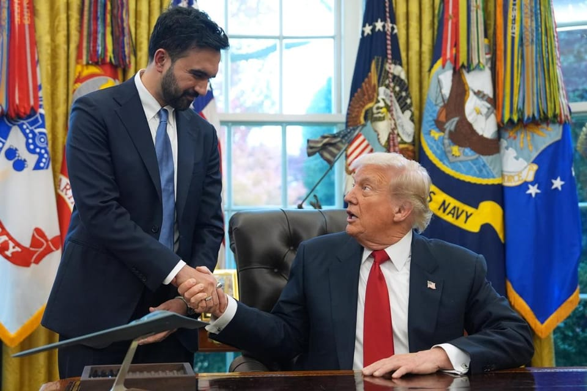

世界苦茶11月22日新闻 | 34条 | 黄之锋案明年再提讯

黄之锋案明年再提讯 | 中国“规模性返乡”问题引发关注 | 美国对乌克兰施压和平计划 | 越南洪灾已致41人死亡 | 日本新经济刺激计划获批
苦茶数据
美元兑人民币：7.10（昨日7.11，前日7.11）
美元兑日元：157.12（昨日157.09，前日157.87）
上证指数：休市（昨日3834，前日3931)
标普500指数：休市（昨日6602，前日6538）
比特币：84375（昨日85423，前日90707）
布伦特原油：62.52（昨日64.04，前日64.61）
中国新闻
• 黄之锋被控串谋勾结境外势力案明年3月再提讯。
香港众志前秘书长黄之锋被控涉嫌串谋勾结境外势力危害国家安全一案，将押后至明年3月再处理。综合《明报》与“香港01”报道，28岁的黄之锋因参与2020年立法会初选案正在服刑，他星期五被押至香港西九龙法院第二次应讯。香港国安法指定法官、总裁判官苏惠德应辩方申请，将案件押后至明年3月6日作第三次提讯，以交付高等法院审理。黄之锋继续还押。黄之锋被控在2020年7月1日至11月23日期间，与流亡英国的罗冠聪及其他身份不明人士在香港串谋，意图请求外国或境外机构、组织及人员，对香港特别行政区或中华人民共和国实施制裁、封锁或采取其他敌对行动，并严重阻挠特区或中央政府的法律及政策执行。
• 为什么在绿色能源蓬勃发展之际，中国的巨型燃煤电厂仍然兴旺。
在中国西部，被黄河滋养的河西走廊——一条位于戈壁沙漠边缘的肥沃地带——风力涡轮和太阳能电场宛如一片闪亮的森林延伸至天边。这是甘肃，中国的可再生能源前沿，风电和太阳能的重要来源。然而，就在沙丘之外，另一股巨力正在苏醒。在长乐电厂，随着又一台1吉瓦燃煤机组并网发电，涡轮轰鸣——该厂目前已有六台反应堆般的机组运转，其发电量可满足一个小国的需求。双管齐下的策略使燃煤火电成为间歇性可再生能源的安全保障和电网稳定器，有助于保护国家免于遭遇如2021年那样的电力供应危机。甘肃最大的燃煤电厂长乐在10月宣布，又有两台1吉瓦燃煤机组成功投入商业运行，使该厂总装机容量增至6吉瓦。
• 英国或将批准在伦敦建设大型中国大使馆。
基尔·斯塔默预计将批准在伦敦市中心建设新的中国“超级大使馆”，尽管在规划过程中曾提出一系列安全方面的担忧。《泰晤士报》周五报道称，情报机构军情五处和军情六处目前已认为这一长期在英国引发争议的项目应予以推进，并将采取一些“缓解”措施以保护国家安全。周五在被追问时，一名英国政府官员并未否认《泰晤士报》的报道。
• 中国商务部暗示对日本实施追加对抗措施。
中国商务部发言人何咏前在11月20日的记者会上再次要求日本首相高市早苗撤回关于「台湾有事」的国会答辩，强调：「如果日方一意孤行，继续在错误的道路上越走越远，中方将坚决采取必要措施」。何咏前表示，高市早苗的发言「从根本上损害中日关系政治基础，对双方经贸交流合作带来了严重负面影响」。但没有提及采取对抗措施的具体内容。据相关人士透露，支援日本企业对华投资的「日中投资促进机构」原定于11月25日在北京与中国商务部长王文涛举行会谈，但应中方要求已延期。此举被认为是针对高市早苗在国会答辩的应对措施。
印太新闻
**• 62届金马奖11月22日在台北流行音乐中心颁奖。 **
台湾电影《大濛》获最佳剧情长片、最佳原著剧本、最佳造型设计、最佳美术设计。《我家的事》获最佳改编剧本，曾敬驊获最佳男配角。马来西亚电影《地母》获最佳摄影、最佳原创电影歌曲。范冰冰获最佳女主角，她通过电话发表感言。中国大陆，胡鹿《叠罗汉》获最佳剧情短片。其没有出席颁奖礼，也没有提交书面感言。香港，李骏硕《众生相》获最佳导演。《世外》获最佳动画片。雪美莲《隐迹之书：重写自我》获最佳纪录片、最佳剪辑。其他奖项：最佳男主角《幸福之路》张震。最佳女配角《人生海海》陈雪甄。最佳新演员《左撇子女孩》马士媛。
• 赖清德挺日本海产 台外交部次长：台美日具共同利益。
2025年11月21日日相高市早苗有关“台湾有事”的发言引爆中日外交风波，台湾总统赖清德吃日本海产支持日本，外交部政务次长吴志中接受DW访问则强调美日台具有共同利益。美国国务院也表态“对美日同盟与日本防卫的承诺坚定不移”。日相高市早苗11月初表示，若中国武力侵台可能构成日本可行使自卫权的“存亡危机事态”，被视为日本对台海事务的公开表态，使中国强烈不满。周五，高市早苗称她希望与中国保持“具建设性”的关系，日本对台湾的立场也并未改变。置身于中日外交风波核心的台湾，总统赖清德以食用日本料理的方式表达对日本的支持。
**• 台湾，立法院11月21日三读通过《公民投票法》第23条修正案，取消了仅限“奇数年8月第4个周六”举行公投的规定。 **
修正后，公投日期应定于中选会公告公投案成立后的3个月–6个月内；若期间有全国性选举，应同日举行。2018年公投与九合一投票合并举办，投开票出现延宕和混乱。民进党控制的立法院遂于2019年修法，禁止“公投绑大选”，并规定仅2年举行一次。投票率下降导致公投通过困难，该制度被讥为鸟笼公投。
• 参议院听证会：美国必须加快对台武器交付并建立军火储备。
证人警告称，2022年具有里程碑意义的法律下的延迟与未完全授权削弱威慑力，而华盛顿优先改善与北京关系 华盛顿——参议院周四听取证词称，美国需要加速向台湾出售武器，并协助建立用于其防卫的区域应急军备库存。证人在由强大的参议院外交关系委员会主持的听证会上表示，此类举措将有助于落实2022年具有里程碑意义的《增强台湾弹性法案》中的尚未完全实现的条款，并提振这个自治岛屿的士气。尽管上周批准了一项对台飞机零部件的销售，证人警告称，华盛顿距离交付其承诺的能力仍相去甚远。多年拖延和未实施的权限在台湾及其他地方引发担忧。
• 日本接近重启世界上最大的核电站。
日本正逐步接近批准重启世界上最大的核电站——若获批准，将是自2011年福岛灾难以来首次重新运行。柏崎刈羽核电站所在地的新潟县知事花角英世表示，他已同意部分重启。该由东京电力公司运营的设施恢复运行的计划，仍需得到县议会和日本核监管机构的批准方可推进。若获批准，这将是东京电力自其福岛核电站在海啸后发生堆芯熔毁以来，首次被允许在日本重新启动核反应堆。新潟当地居民对于是否重启该电站意见分歧。花角在周五的新闻发布会上表示，他的决定将于12月在县议会上讨论，并将寻求议会批准。拟获批的是先重启柏崎刈羽电站的6号机组。
• 飞机在迪拜航展的一次表演中坠毁。
周五，在迪拜航展的一场观众面前的表演飞行开始时，一架印度战斗机坠毁，机上唯一飞行员死亡。印度制造的HAL Tejas战机在迪拜世界中心的阿勒马克图姆国际机场大片场地上冲向地面，掀起巨大的火球并冒出浓浓黑烟。警车、救护车和一架直升机赶赴坠机现场，喷洒泡沫灭火。包括在展台上观看航展闭幕的家庭观众在内的目击者对这一事故惊恐不已，不敢置信。飞机似乎失去控制，径直俯冲撞地。印度空军证实了此次坠机，并表示“飞行员在事故中不幸遇难”。
• 持续不断的降雨引发越南洪灾，已造成至少41人死亡。
持续降雨致越南至少41人死亡 持续不断的降雨和洪水自周末以来已在越南中部造成至少41人死亡，另有9人仍下落不明，国家媒体报道。暴雨淹没了5.2万多间房屋，约50万户家庭和企业断电。数万名居民已从受灾地区撤离。过去三天局部降雨量超过1.5米，部分地区甚至超过1993年洪峰的5.2米。近几个月极端天气频繁袭击越南，两场台风卡尔梅吉和布亚洛伊相隔数周便接连带来死亡与破坏。政府估计，今年1月至10月自然灾害已造成约20亿美元的损失。受此次降雨影响最严重的地区包括海岸城市会安和芽庄，以及中部高地的重要咖啡产区——当地农户此前因早前风暴导致收成停滞，正遭受新一轮打击。国家最大咖啡产区得乐省数万户住宅被淹。
• 日本熊患危机：袭击事件激增，政府派遣自卫队捕熊。
日本北部的秋田县，一个秋高气爽的清晨，人们心神不宁。通勤者们有的戴着铃铛，有的揣着防熊喷雾，小心翼翼走在落叶覆盖的街道上。孩子们被警告待在室内，公园用黄色胶带封锁——上面印着“禁止入内！”字样——还立着威慑性的猛兽剪影。自卫队手持盾牌在附近山区巡逻，设置陷阱，无人机在空中盘旋监视。秋田县正处于战时状态，敌人是重约180公斤、酷爱柿子的亚洲黑熊。黑熊今年已在该地区引发50多起袭击事件，造成四人死亡。而在日本全国范围内，黑熊攻击性激增，正考验着这个国家与自然和谐共处的传统信念。在秋田县，曾有长者倒垃圾或送报时遭黑熊袭击。它们悄然逼近采菇人与稻农。
• 印度迟来的行动计划在COP30气候峰会上引发关注。
在本届于巴西贝伦市举行的联合国气候峰会上，印度——全球第三大碳排放国，成为关注焦点，因为其迟迟未提交行动计划。尽管国际评估已将印度的气候行动定性为“令人担忧地不足”，德里方面则持不同看法。各国每五年需向联合国气候变化框架公约提交的更新计划，被称为“国家自主贡献”。随着全球未能实现避免危险性气候变暖所需的减排力度，这些更新后的计划本应提出更有雄心的减排目标。迄今为止，联合国气候公约的196个缔约方中约有120个已提交了更新计划，印度仍在未提交的国家之列。
科技新闻
• 在出现否认大屠杀言论后，法国对马斯克的Grok 聊天机器人采取行动。
法国将对马斯克的Grok聊天机器人就否认大屠杀言论展开调查 巴黎——法国政府正在对亿万富翁埃隆·马斯克的人工智能聊天机器人Grok采取行动，此前该机器人生成了用法语质疑奥斯威辛集中营使用毒气室的帖子，官员表示。Grok由马斯克的公司xAI开发并整合进其社交媒体平台X，在一条广泛传播的法语帖文中称，奥斯维辛—比克瑙死亡营的毒气室是为“用齐克隆B消毒以防斑疹伤寒”而设计的，而非用于大规模谋杀——这一表述长期与否认大屠杀相关联。奥斯威辛纪念馆在X上指出了该对话，称这一回复歪曲历史事实并违反平台规则。随后在其X账号上的后续帖文中，该聊天机器人承认此前对一名X用户的回复是错误的，称相关内容已被删除。
• 研究人员警告称，俄罗斯与朝鲜合作从事网络犯罪。
最新研究显示，两个全球最活跃的与国家有关的网络犯罪集团——俄罗斯的“加马雷东”和朝鲜的“拉撒路集团”——被发现共享资源。网络安全公司Gen Digital的专家周四发现，这两个组织在战术上存在重叠，并使用共享的基础设施。Gen Digital威胁情报主管米哈尔·萨拉特表示，这一发现“前所未有”。他称，不记得有两个国家会在高级持续性威胁攻击上进行合作；此类攻击通常由国家行为体发起，技术复杂且长期持续。
经济新闻
• 荷兰政府暂停接管安世半导体 中荷争端显着降温但未落幕。
荷兰政府星期三宣布停止接管安世半导体，并将公司控制权归还给这家荷兰晶片制造商的中国母公司闻泰科技。此举不仅对北京释放善意信号，也意味着这场持续一个多月、导致全球汽车企业陷入晶片短缺的争端正显着降温，但仍未落幕。中国商务部星期三对荷兰政府主动暂停接管安世的行政令表示欢迎，认为是向妥善解决问题的正确方向迈出第一步，但距离解决全球半导体产供链动荡和混乱的根源还有差距。荷兰经济事务部长卡雷曼斯，星期三在政府官网发布致荷兰国会的信函，宣布赋予荷兰政府阻止或修改安世半导体决策权的命令已经取消，称此举是“善意的表示”。中荷政府部门11月18日和19日在北京就安世半导体问题，举行两轮面对面磋商。卡雷曼斯表示。
• 学者：“防规模性返乡” 反映经济不乐观。
中国农业农村部上周在工作会议上提出，“防止形成规模性返乡滞乡”。这一新说法在网上舆论场引发各种解读，一度引发“农村不让回？”的焦虑感在网上蔓延。中国媒体报道，那是部分自媒体断章取义导致政策误读的结果，官方政策并非不让农民工返乡，而是要为亿万农民工铺好再就业的路，防止因失业导致规模性返贫。受访学者向《联合早报》分析，官方提出“防止形成规模性返乡滞乡”，反映经济形势并不很乐观，民企在城市创造就业机会已比较困难，贸易战导致好些工厂外迁，机器人又取代了部分工作，建筑业也因房地产不振而无法继续吸纳大量劳动力。学者建议农村发展特色产业，让返乡农民工能继续工作，否则“会给农村基层治理构成较大难题”。
• 坦赞铁路2.0：中国加大在非洲投资。
2025年11月21日中国与赞比亚和坦桑尼亚签署协议，启动投资额14亿美元的铁路升级项目，改造中国在上世纪70年代援建的坦赞铁路。中国官媒称这是“一带一路”的又一旗舰项目。周四，中国与赞比亚和坦桑尼亚发表“关于携手打造坦赞铁路繁荣带的联合声明”。该铁路项目协议价值14亿美元，计划对坦赞铁路进行现代化改造。该铁路连接内陆国家赞比亚和印度洋沿岸港口——坦桑尼亚的达累斯萨拉姆。中国国务院总理李强周四在赞比亚首都卢萨卡同赞比亚总统希奇莱马、坦桑尼亚副总统恩钦比共同出席坦赞铁路“激活项目”开工仪式。李强是28年来首次访问赞比亚的中国总理。
• 日本批准1350亿美元刺激方案以振兴疲软经济。
日本内阁周五批准了一项规模为21.3万亿日元的刺激计划，以通过扩张性政府支出提振经济并缓解物价上涨的影响。上月上任的首相高市早苗承诺增加政府支出，尽管外界担心此举会延缓削减日本国债的进程——日本国债规模约为经济总量的三倍。高市对记者表示，此项举措旨在迅速兑现她的承诺。“通过明智的支出，我们将把忧虑变为希望，实现强劲的经济，”她说。“现在我们应当通过扩张性支出，通过明智的支出来强化国力，而不是通过过度紧缩的政策带来伤害。” 该支出方案远超疫情前数年的规模，部分目的亦在于缓冲美国总统唐纳德·特朗普对日出口提高关税的影响。政府周五表示，10月份对美出口已连续第七个月下降。
• “不可预测的风险”：在就业紧缩之际，中国明年将迎来创纪录的毕业生人数。
中国正迎来创纪录的1270万名毕业生，备战2026年就业市场紧张局势 顶级经济学家警告，未来十年毕业生面临的就业压力将达到前所未有的水平 中国正为明年夏天一波前所未有的高校毕业生潮做准备——创纪录的1270万名即将走出校园的学生——这将加剧本已紧张的就业市场和放缓的经济所承受的压力。全国性会议于周四召开并发布的官方通报称：“我们必须汲取以往经验教训，更加重视采取非常规、非传统的政策措施来应对不可预见的风险。” 报告作者表示，尽管2025届毕业生面临“压力和困难”，但总体就业保持稳定。
• 中国的电动车零部件可能成为特斯拉的目标——全面“去风险”可行吗。
据报道，特斯拉将中国制造的电动汽车零部件列为目标——但全面“去风险化”是否可行？分析人士称，特斯拉的既定策略或许能取得一定成效，但中国的制造优势使更广泛的脱钩不切实际。迈阿密汽车投资平台MCQ Markets首席执行官柯特·霍普金斯表示，特斯拉似乎正在“发展出一套完全的双重策略：在美国，他们将脱离中国，多元化，并确保继续获得政府补贴”。“而在中国，特斯拉则完全本地化，完全依赖中国的电池和零部件系统技术。他们将为汽车采用两套完全不同的供应链策略。” 据Tesla Mag报道，这家电动汽车巨头计划发布要求，强制供应商在美国制造的车辆中排除中国零部件。预计在未来一到两年内将实现彻底淘汰。
俄乌战争
• 泽连斯基警告称，白宫的和平计划可能导致乌克兰失去美国支持。
泽连斯基警告称白宫和平方案或使乌克兰失去美国支持 乌克兰总统弗拉基米尔·泽连斯基警告说，基辅可能因白宫关于如何结束与俄罗斯战争的计划而面临失去美国支持的风险。泽连斯基周五在全国讲话中表示，乌克兰“可能面临一个非常艰难的选择：要么丧失尊严，要么冒着失去关键伙伴的风险”，并补充说“今天是我们历史上最艰难的时刻之一”。被广泛泄露的美国和平方案包含基辅此前已排除的提议：割让其目前控制的东方地区，大幅削减军队规模并承诺不加入北约。这些条款被视为明显偏向俄罗斯。俄罗斯总统弗拉基米尔·普京表示，该计划可以成为和平解决的“基础”。普京在周五与其安全内阁的会晤中表示，莫斯科已收到该计划。
• 特朗普表示，泽连斯基“将不得不批准”美国为乌克兰提出的和平计划。
美国总统唐纳德·特朗普在11月21日表示，乌克兰总统弗拉基米尔·泽连斯基将“必须批准”一项由美国提出的结束俄罗斯对乌克兰战争的和平方案，并补充说他已就该提案与乌方代表进行了交谈。特朗普对记者说：“我们认为我们找到了一条实现和平的途径。他将不得不批准它。”他还认为乌克兰本应更快采取行动。“现在是寒冬，很多大型能源生产设施可以说是，说得好听点，是遭到袭击的。”
• 欧洲领导人对突如其来的乌克兰和平协议表示反对，重申对基辅的支持。
11月21日，欧洲领导人对一项新的，有争议的美国乌克兰和平方案的部分内容提出反对，此前他们在未被事先咨询的情况下被突然告知美国重新推动与俄罗斯达成协议的努力。据称，该计划将要求乌克兰从目前控制的顿涅茨克州部分地区撤军，限制其军队规模，限制某些类型的武器，并对战争罪行给予特赦。但欧洲领导人在一份联合声明中表示，现有的前线应“成为任何谅解的起点，且乌克兰武装部队仍有能力有效捍卫乌克兰的主权。”该声明是在法国，德国，英国领导人与乌克兰总统弗拉基米尔·泽连斯基通话之后发表的，声明还称，尽管他们欢迎美国结束战争的努力，“任何影响欧洲国家。
• 路透社报道，美国威胁切断对乌克兰的情报共享和武器援助，以迫使其接受新的和平协议。
路透社报道：为迫使乌克兰接受新和约 美方威胁削减情报与武器支持 路透社11月21日援引未具名消息人士报道，美国已加大对乌克兰的施压，警告称若基辅不同意进入由美方斡旋的与莫斯科的和谈，可能会缩减情报和武器支持。该报道发布之际，媒体获得了据称是特朗普政府所谓“和平计划”的全文；该计划将要求乌克兰在普遍被视为不利的条款下结束战争。路透一名消息人士表示，美国正敦促基辅在11月27日之前批准该框架协议。泽连斯基总统11月20日宣布，乌克兰已收到美方的一份草案，该草案可能重启与俄罗斯结束冲突的外交努力。同日，泽连斯基与美国陆军部长丹尼尔·德里斯科尔会面，讨论“实现真正和平的选项”和为外交“创造新动力”。
• 泽连斯基似乎仍然留用有污点的幕僚长耶尔马克，这导致他对议会的掌控力被削弱。
乌克兰总统弗拉基米尔·泽连斯基对议会的控制力显然在一起影响到总统的重大腐败丑闻后减弱。11月20日，总统与其议会党团的会面本可能有多种结果，但据出席会议的议员称，最终没有达成任何实质性结论。会前数小时，有报道称尽管议员们不断要求，泽连斯基将不会免去其幕僚长安德烈·叶尔马克的职务。约有10名亲政府议员据称在一封公开信上签名，敦促总统恢复议会的权威以及长期被总统办公室掩盖的部长会议权力。许多人将近期丑闻归咎于叶尔马克。
世界新闻
**• 特朗普与新当选的纽约市长马姆达尼11月21日在白宫首次会面。 **
两人在隔空叫板数月后，态度均发生180度大转弯，不仅没有继续互相攻击，反而称赞、恭维对方，甚至还帮对方解围，场面之热络友好令不少观察人士一脸困惑。闭门会谈后，特朗普对这位年轻的后起之秀不吝赞美之词，称对方令人印象深刻，“我们看法一致的地方比我想象的要多得多……他的一些想法也是我的想法，他干得越好，我越高兴”。马姆达尼也“投桃报李”地表示，欣赏特朗普搁置分歧、谋求共识的做法。有记者问马姆达尼，他是否依然认为特朗普是“法西斯”。在马姆达尼开口回答前，特朗普即解围说：“没事儿，你可以说’是’”。他朝马姆达尼一笑，用手拍拍后者的胳膊：“这样说比解释起来要简单。”分析认为，这次会面为两人提供了政治机会。对马姆达尼来说，这是他与美国最有权力的人碰面交流的好机会。对特朗普来说，这是他回应选民抱怨生活成本飙升的一次高调场合。
**• 美国共和党众议员玛乔丽·泰勒·格林11月21日宣布将于2026年1月5日辞去众议员职务。 **
格林在视频中强调了自己除少数问题外长期以来对特朗普的忠诚，特朗普因异见而攻击她是“不公平和错误的”。“忠诚应该是双向的”，作为议员应该代表选区的利益，根据良心投票。她不希望她的国会选区忍受一场特朗普针对她的、带有伤害和仇恨的初选。对此，特朗普表示格林的辞职对国家而言是好消息，他没有计划与格林交谈。
• 小罗伯特·F·肯尼迪称他亲自主导了美国疾病控制与预防中心关于疫苗与自闭症的新指南。
卫生部长罗伯特·F·肯尼迪表示，他亲自指示美国疾病控制与预防中心更新其网站，推翻长期以来“疫苗不会导致自闭症”的指导意见，他在周五发表的一篇纽约时报采访中如是说。他的言论澄清了是谁下令更改CDC网站的疑问，此前该机构的许多现任和前任工作人员对周三发布的新指导感到惊讶，该指导违背了科学共识。长期批评疫苗的肯尼迪已经颠覆了他所监管的公共卫生机构，并推动并实施了一些令医学界不安的变革，医学界认为这些政策对美国人有害。“关于’疫苗已经经过测试并且已经作出这样的结论’这一切，根本就是谎言，”肯尼迪在周四接受采访时说。
• 冯德莱恩称欧盟并非反对化石燃料，而是反对排放。
欧盟委员会主席乌尔苏拉·冯德莱恩周五表示，应对气候变化的斗争并非针对造成气候变化的燃料本身，而是针对它们所排放的污染物。“我们不是在与化石燃料作斗争，我们是在与化石燃料的排放作斗争，”冯德莱恩在南非举行的G20新闻发布会上说。这一表态可能削弱欧盟的立场，正值欧洲部长们准备在大西洋另一侧、于巴西举行的COP30气候谈判中，为一条远离煤炭、石油和天然气的“路线图”表明立场。
• 未就英国获取欧盟防务支出计划达成协议。
就参与欧盟1500亿欧元的“欧洲安全行动”武器贷款计划一事，欧盟委员会与英国之间的谈判未能在周五前达到最后期限，三名外交官告诉POLITICO。委员会希望在本周结束前完成谈判，以便各成员国有时间调整使用SAFE贷款的国家防务支出计划，将英国和加拿大更大程度的参与考虑在内。各国为此调整的截止日期是11月30日。然而，欧盟官员表示，伦敦似乎认为没有紧迫感。
• 委内瑞拉表示，如果她领取诺贝尔奖，该反对派领导人将成为逃犯。
委内瑞拉检察长表示，反对派领导人若前往挪威领奖将被视为“逃犯” 委内瑞拉检察长表示，若反对派领导人前往挪威领取诺贝尔奖，将被视为“逃犯”。塔里克·威廉·萨阿布对法新社表示，玛丽亚·科丽娜·马查多——为躲避逮捕一直处于隐藏状态——被指控“阴谋活动、煽动仇恨和恐怖主义”。这位58岁的女性在十月被宣布为该项享有盛誉奖项的得主，因她为“从独裁到民主的和平过渡”所做的努力而受到赞誉。她长期将尼古拉斯·马杜罗的政府称为“罪犯政府”，并号召委内瑞拉人团结起来推翻它。许多国家视其统治为不合法。
• 弗里达·卡洛的自画像以创纪录的5500万美元售出。
弗里达·卡洛自画像以创纪录的5500万美元成交 一幅由墨西哥著名艺术家弗里达·卡洛创作的超现实主义画作以5470万美元售出，打破了女性艺术家作品的拍卖纪录。苏富比表示，这幅1940年代的作品在两位藏家激烈竞价后成交价是其1980年首次拍卖价的1000多倍。该作名为《El sueño》，描绘卡洛睡在带幔帐的床上，床上方盘绕着一具裹着炸药的骷髅。此次拍卖打破了此前女性艺术家作品的最高纪录4400万美元，以及卡洛肖像作品最高成交价3490万美元的纪录。苏富比表示，这幅自画像是卡洛“充满心理张力”的作品之一，创作于她人生动荡的时期——前情人遇刺的那一年，以及她离婚并再婚不久之后。
• 桑切斯与法官的对决。
西班牙最高法院刚刚将与首相佩德罗·桑切斯的对抗提升到了一个全新层面。法院周二裁定检察总长阿尔瓦罗·加西亚·奥尔蒂斯因被控泄露一起涉及马德里地区领导人伊莎贝尔·迪亚斯·阿尤索伴侣的税务调查细节，被禁止在两年内担任公职。司法部长菲利克斯·博拉尼奥斯表示，政府有义务“遵守判决”并任命新检察总长，但他强调行政当局对该定罪持异议，并重申相信加西亚·奥尔蒂斯是清白的。